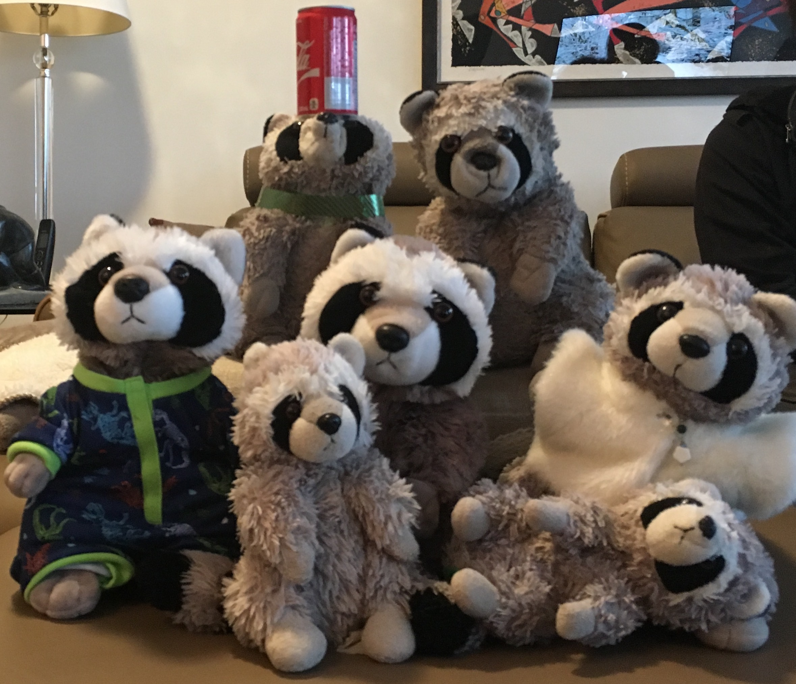

Jackets! I am not the only raccoon. I come from a family of raccoons.

Jackets. It started out as a small gift after the raccoon Socks saved us from the Jade Witch in Mists of Pandaria.
One of us was rather sad about the raccoon being turned into Jade, so mom got them a new raccoon named Socks.
Jackets! One day that person was leaving for university- so the rest of us secretly stuffed Socks into their luggage!
Jackets... But then we no longer had a raccoon, so the next oldest got a raccoon, Mittens. And, when they left, they also took their raccoon with them.
Jackets! That's where I come in! I am the third raccoon. Then there's Faust- english name Hats- named such since we got Faust in Germany.
Jackets. Jeans is the fifth and Sock's owner's significant other's raccoon. Jackets! Chancla and PJ are sixth and seventh and came because mom and dad got lonely without all the other raccoons.
Jackets! Maybe one day there will be more!
Jackets. Here is a link back to my home page.